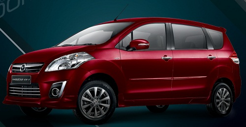

SALAM OTOMOTIF!...
Selamat Datang di PetrolGarage dengan website ini dapat memudahkan anda dalam memilih berbagai
pilihan mobil dan memberi informasi tentang mobil-mobil pilihan yang ingin anda ketahui lebih detail.
kami akan menjelaskan nya secara lengkap berdasarkan informasi yang kami dapatkan
dari berbagai sumber situs,forum otomotif,opini,dan review pengalaman pribadi.
setelah itu kami meninjau setiap detail spesifikasi dan menilai setiap aspek pada mobil lalu membagi nya dalam berbagai kriteria
kami tidak ber afiliasi dengan suatu pihak untuk keuntungan pribadi
Berikut klasifikasi dan penjelasan setiap kriteria dari kami :
1.Peforma :
-untuk menyingkat beberapa penilaian, kami menilai kendaraan
dari segi peforma yang sudah mencakup Peforma mesin dan Akselerasi.
2.Kenyamanan :
-kenyamanan merujuk pada bantingan Suspensi,Kualitas material,Keheningan kabin,
Akomodasi hingga Kenyamanan Jok mobil.
3.Fitur :
-mencakup berbagai Fitur dan fasilitas Keamanan pada kendaraan.
4.Desain :
-mencakup setiap detail Kualitas pada eksterior mobil,dan bentuk body menyeluruh
pada kendaraan.
5.Value for Money
-hal selanjutnya yang ditinjau adalah Jaringan servis,Worth kendaraan dan Resale Value kendaraan.
6.Handling
-terakhir tidak lupa untuk meninjau handling dan sensasi mengendarai suatu mobil.
Kali ini kami akan mengulas dan membandingkan Mobil-mobil yang biasa disebut
sebagai Low MPV(Multi Purpose Vehicle) yang merupakan mobil sangat umum di Indonesia
mobil mobil ini jelas mengutamakan akomodasi dan kenyamanan berkendara
langsung saja berikut mobil mobil yang akan ditinjau.
1.Toyota Avanza
Rentang Harga 190-230jt
Spesifikasi Toyota Avanza Veloz
Spesifikasi Mobil Toyota Avanza Veloz |
| Mesin | - Tipe mesin : IL, 4Silinder, 16 V, DOHC, Dual VVT-i
- Kapasitas Silinder : 1329
- Sisitem Suplay Bahan bakar : EFI
- Daya Maksimum : 96,5 Ps/6000rpm
- Torsi Maksimum : 12,3 Kgm/4200rpm
- Transmisi : 5 Kecepatan M/T
|
| Dimensi | - P X L X T : 4200 x 1660 x 1695 mm
- Jarak Pijak depan/belakang : 1425/1435
- Jarak Poros Roda : 2655
- Ground Clearance : 200
- Kapasitas Tangki : 45 L
|
| Suspensi / Kaki-Kaki | - Suspensi Depan : MacPherson Strut dengan pegas koil
- Suspensi Belakang : 4 Link Lateral Rod dengan pegas koil
- Rem Depan : Disc
- Rem Belakang : Drum
- Ukuran Ban : 185/65 15
|
| Eksterior | - Projector Headlamp Design
- Front Brille Design
- Sporty Alloy Wheel Design
- Smothing Panel
- Fog Lamp Garnish
- Rear Lamp Design
- Rear Reflector
- Rear Spoiler With High Mount Stop Lamp
|
| Interior | - Dual SRS Air Bag
- Air Conditioner
- Audio
- Power Window
- Kaca Sepion Elektrik
|
2.Mitsubishi Expander
Rentang Harga 190-245jt
Spesifikasi Mitsubishi Xpander
Spesifikasi Mitsubishi Xpander |
| Mesin |
| Tipe | 4A91 1.5L MIVEC DOHC 16-Valve |
| Kapasitas | 1.499 cc |
| Power Max | 104 PS/6000 rpm |
| Torsi Max | 141 Nm /4000 rpm |
| Transmsi | Manual 5 Percepatan, Otomatis 4 Percepatan |
| Bodi |
| P x L x T | 4475 mm X 1750 mm X 1700 / 1695 |
| Berat | 1780 kg |
| Turning Radius | 5.2 meter |
| Wheelbase | 2275 mm |
| Ground Clearance | 200 / 205mm |
| Kapasitas tangki | 45 liter |
| Rangka dan Kaki-Kaki |
| Suspensi depan | Macpherson Strut Coil Spring |
| Suspensi belakang | Torsion Beam |
| Ban | 205/55 R16 / 185/65 R15 |
| Rem Depan | Disk Brake |
| Rem Belakang | Drum Brake |
| Fitur |
| Keselamatan/Keamanan | Rem ABS,EBD,BA |
HSA | Pretensioner Seat Belt | ISOfix,Tether Anchor | Rear View Camera | Immobilizer | Keyless Operation System | | Interior |
| 2DIN Touchscreen | |
| Navigation System | |
| Short Connection | |
3.Suzuki Ertiga
Rentang Harga 200-240jt
Spesifikasi Suzuki Ertiga Dreza
Spesifikasi Suzuki Ertiga Dreza |
| Mesin | - Tipe Mesin : K14B, DOHC, VVT, 16 katup, 4 in-Line
- Isi Silinder : 1,373 cc
- Diameter x Langkah : 73.0 x 83.0 mm
- Kompresi rasio : 1 : 10
- Daya Maksimum : 95 PS/6.000 rpm
- Torsi Maksimum : 130 Nm/4.000 rpm
- Sistem Bahan Bakar : Multi Point Injection
- Kapasitas Bahan Bakar : 45 L
- Transmisi : 5 MT / 4 AT
|
| Dimensi | - P X L X T : 4.265 x 1.695 x 1.685 mm
- Jarak Poros Roda : 2.740 mm
- Jarak Pijak Depan / Belakang : 1.480/1.490 mm
- Berat Kosong : MT 1,175 kg, AT 1,185 kg
- Jumlah Tempat Duduk : 7 orang
- Ground Clearance 185 mm
- Radius Putar Minimum : 5,2 m
|
| Suspensi / Kaki-Kaki | - Suspensi Depan : MacPherson strut with coil spring
- Suspensi Belakang : Torsion beam with coil spring
- Rem Depan : Ventilated Disc
- Rem Belakang : Leading / Trailing Drum
- Sistem Kemudi : Rack & Pinion
- ukuran Ban : 185/65 R15
|
| Eksterior | - New Front Bumper
- New Front Grill : Tipe GL & GX
- Fog Lamp
- Electric Fodable Outside Mirror : Tipe GX
- Body Color
- Turn Signal on Fender : Tipe GL & GA
- Rear Bymper
- Chrome Back Door Garnish
|
| Interior | - Pattern Fabric Material seat and Trim Door
- Air conditioning system Double Blower
- Carpet Floor
- Gear Shift
- Hand Brake
- Luggage Under Box
- Audio Double DIN
- Console Box
- Kursi Split 50:50 pada baris ketiga
- Auto Up Window Driver Side with Sensor
|
| Fitur Keselamatan | - Dual Airbags
- Side Impact Beam
- ABS + EBD
- Child Proof Door Locks
- Sistem Keyles Entry
- Immobilizer
|
4.Honda Mobilio
Rentang Harga 190-245jt
Spesifikasi Honda Mobilio
Spesifikasi Honda Mobilio |
| Mesin | - Tipe mesin : 1,5 l SOHC 4 silinder segaris, 16 katup I-vtec + DBW
- Kapasitas Silinder : 1496 cc
- Sisitem Suplay Bahan bakar : PGM-FI
- Diameter X langkah : 73 x 89,4 mm
- Perbandingan Kompresi : 10,3:1
- Daya Maksimum : 88 kw(118PS)/ 6600rpm
- Momen Puntir Maksimum : 14,8 kg,m(145nm)/4600rpm
|
| Dimensi | - P X L X T : 4.386×1.683×1.603 mm
- Jarak Sumbu Roda : 2.650mm
- Jarak Pijak depan/belakang : 1.472 / 1.475mm
- Radius Putar : 5.2 m
- Ground Clearance 185mm
- Kapasitas Tangki : 42 Liter
|
| Suspensi / Kaki-Kaki | - Depan : McPherson Strut & Coil Spring
- Belakang : Torsion Beam & Coil Spring
- Rem Depan : Ventilated disc
- Rem Belakang : Disc
- Ban : 185/55 R16
- Velg : Alloy Wheel
|
| Eksterior | - Led Hight Mount Stop Lamp
- Rear Reflector
- Rear Wiper
- Chrome Front Grille
- Fog Lamp
|
| Interior | - Multi Informasion LCD
- ECO indkator
- Audio : Single DIN AM/FM single discMP3/WMA+AUX input, Double DIN AM/FM
- AC Double Power
- Power Door Miror
- Power Window
- Power Outlet
- Grenn Glass
- Footrest
|
5.Nissan Grand Livina
Rentang Harga 210-260jt
Spesifikasi Nissan Grand Livina
Spesifikasi Nissan Grand Livina |
| Mesin | - Kode : New HR15DE
- Tipe : 4 Cylinder Inline, 16 valve, DOHC and Twin VTC
- Isi silinder : 1.498cc
- Bore x Stroke : 78.0 x 78.4 mm
- Daya Maksimum : 109 PS / 5600 rpm
- Torsi Maksimum : 14.4 kgm / 4000 rpm
- Fuel System : ECCS (Electronic Concentrated-engine Control System)
- Kapasitas Tangki : 52,4 L
- Transmisi : HWS CVT
|
| Dimensi | - Jenis Rangka : Monocoque
- P X L X T : 4485 x 1700 x 1650 mm
- Jarak Poros Roda : 2600 mm
- Berat : 1250 kg
- Ground Clearance : 175 mm
- Radius Putar Minimum : 5.5 m
|
| Suspensi / Kaki-Kaki | - Sistem Kemudi : Rack & pinion with electric power steering
- Suspensi Depan : MacPherson strut with stabilizer
- Suspensi Belakang : Torsion Beam with stabilizer
- Rem Depan : Ventilated disc
- Rem Belakang : Drum
- Ukuran Ban : 185/65 R15
|
| Eksterior | - Grille : Chrome Grille Design
- Full Body : Color Bumper Design
- High Mounted Stop Lamp : With (LED)
- Rear Wiper : Ya
- Outside Door Handle : Black
- Outside Door Mirror : Electric, Body Color
|
| Interior | - Combi Meter : Analog New Design 2 Gauge Meter + Drive Computer (With Tachometer)
- Seat Material : Soft Fabric (Beige)
- Center Cluster Finisher : Silver Decoration
- 3 Spokes Steering Wheel : New 3 Spokes Urethane + Silver Decoration
- Power Window : Ya
- Rear AC Vent : Cup Holder
- Front Cup : Holder without Lid
- 2nd Row Armrest with Cup Holder
- 2nd Row Headrest
- 3rd Row Seat Foldable Quick System
|
| Fitur Keselamatan | - Power Door Lock with (Speed Sensor)
- Seat Belt 1st Row 3-Point ELR (x2) with Pre-tensioner
- Seat Belt 2nd Row 3-Point ELR (x2) + 2-point ELR (x1)
- Seat Belt 3rd Row 3-Point ELR (x2)
- Airbag Driver
- Airbag Front Passenger
- Zone Body Concept
- Side Impact Beam
- Collapsible Steering Column
- Keyless Entry with Alarm
- Shock Sensor
|
6.Chevrolet Spin
Rentang Harga 125-220jt
Spesifikasi Chevrolet Spin
Spesifikasi Mobil Chevrolet Spin |
| Mesin | - Tipe Mesin : 4 Cylinder DOHC 16 Valve Dual VVTi (Type 1.2L, 1.5L), 4 Cylinder Commonrail Direct Injection with Turbocharger (Type 1.3L)
- Kapasitas Silinder : 1,229 cc (Type 1.2 L), 1,485 cc (Type 1.5L), 1,248 cc (Type 1.3L)
- Sisitem Suplay Bahan bakar : Multi Point Fuel Injection (Type 1.2L , 1.5L), High Presure Common Rail Direct Injection (Type 1.3L)
- Diameter X Langkah : 73.4 x 72.6 mm (Type 1.2L), 74.71 x 84.70 mm (Type 1.5L), 69.6 x 82 mm (Type 1.3L)
- Daya Maksimum : 86 PS/5,600 rpm (Type 1.2L), 109 PS/6,000 rpm (Type 1.5L), 75 PS/4,000 rpm (Type 1.3L)
- Torsi Maksimum : 115 Nm /4,000 rpm (Type 1.2L), 142 Nm/3,800 rpm (Type 1.5L), 190 Nm/1,750 rpm (Type 1.3L)
- Transmisi : 5 Speed Manual
- Sistem Kemudi : Rack & Pinion with Hydraulic Power Assisted Steering
|
| Dimensi | - Panjang : 4.360 mm
- Lebar : 1.735 mm
- Tinggi : 1.664 mm
- Jarak Pijak depan : 1.503 mm
- Jarak Pijak belakang : 1.509 mm
- Jarak Poros Roda : 2,620 mm
- Ground Clearance: 160 mm
- Kapasitas Tangki : 50 L
- Kapasitas Tempat Duduk : 7 orang
|
| Suspensi / Kaki-Kaki | - Suspensi Depan : Independent McPherson with stabilizer and coil springs
- Suspensi Belakang : Semi-independent torsion beam with stabilizer and coil springs
- Rem Depan : Ventilated Disc
- Rem Belakang : Drums
- Ukuran Ban : 195/65 R16
- Velg : Alloy 15*6 j
|
| Eksterior | - Head Light : Halogen with Follow Me Home
- Fog Light – Front : Type 1.3L , 1.5L
- High Mount Stop Lamp : Type 1.3L , 1.5L
- Front & Rear Wiper – with Intermittent : All Type
- Front Grille : Black (Type 1.2L, 1.5L), Chrome (Type 1.3L)
- Outside Side Mirror : Manual control, Manual folding, Body color
- Door Handle – Body Color : All Type
|
| Interior | - Interior Color : Urban & Light Platinum
- Theater Style Seating
- Storage Box on Top of Dashboard
- Tiltable Steering
- Trip Computer
- Courtesy Light – Trunk
- Cup Holders at Every Row
- Seat Back Pocket – Front Passenger
|
| Fitur Tambahan | - Cell Safety System Body Structure : All Type
- Front Row Seat Belt : 3 Point ELR, Pretensioner and Load Limiter
- Speed Sensing Auto Door Lock : All Type
- Engine Immobilizer : All Type
- Flip Key : All Type
- 2nd Row Seat Belt : 3 Point ELR x2, 2 Point ELR x1
- 3rd Row Seat Belt : 3 Point ELR x2
|
7.Mazda VX-1
Rentang Harga 210-230jt
